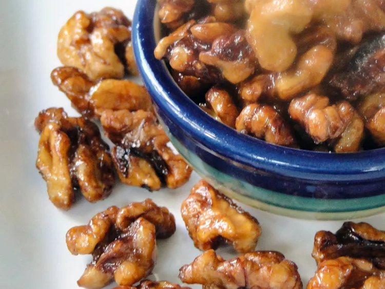

Chinese Fried Walnuts

Description
Chinese-style candied walnuts.
Ingredients
- 1 pound shelled walnuts
- 1 cup granulated sugar
- vegetable oil for frying
- salt to taste
Directions
- Place walnuts in a medium stock pot. Cover with water and boil for 2 minutes. Strain, but do not rinse. Transfer to a bowl and toss with sugar while still hot until well coated.
- Heat 3 inches of oil in a large saucepan over medium-high heat. When oil appears to shimmer, fry 1 nut to test for heat. Nut should begin to sizzle immediately.
- Fry 1/3 of the batch of nuts at a time uncovered, 4 to 5 minutes. Toss nuts before each batch and repeat. Using a slotted spoon, transfer each batch to a cookie sheet to cool. Season to taste with salt and break apart when cool.